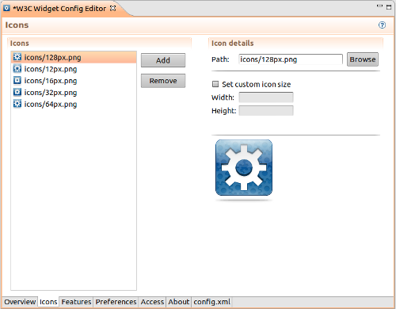

Icons
The Icons shows icons associated with a widget.
To add an icon:
- Press the Add button. The dialog window will
be opened.
- Press the Browse button and choose an
appropriate icon.
There is no need to set the icon's dimensions unless you want to change
default values.
- Press the Finish button.
It is possible to drag an icon file from Project
Explorer View and drop it into the icons list.

More information about icons can be found here.